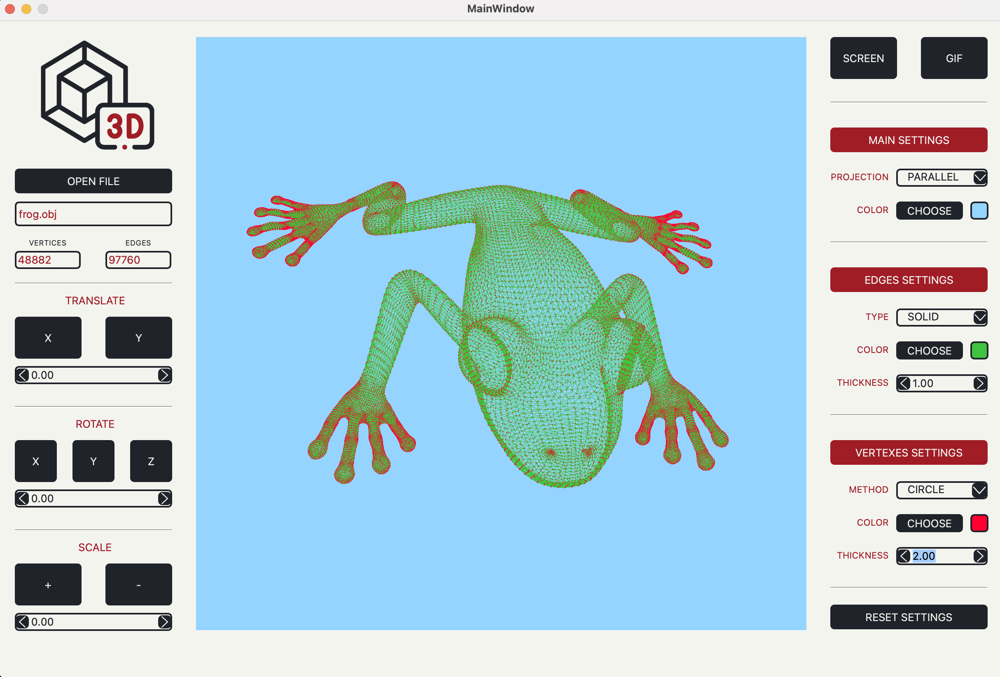

Реализация 3DViewer v2.0.

Общая информация
Программа позволяет открывать и просматривать файлы формата .obj
Объект можно вращать вокруг осей X, Y, Z, двигать по осям X, Y, отдалять и приближать.
Перемещать и вращать объект можно как с помощью мыши, так и клавишами на левой панели приложения.
Левая кнопка мыши отвечает за вращение объекта, правая - за перемещение, вращение колеса - за изменение масштаба.
Настройки
На правой панели приложения можно задать следующие настройки отображения объекта:
Для возвращения к стандартным настройкам нажми Reset settings
Screenshot и Gif
Для создания скриншота модели нажми кнопку Screen и выбери путь сохраниения .png изображения.
По умолчанию скриншоты сохраняются в папку Applications/3DViewer/Screenshots/
Для создания GIF-изображения нажми кнопку Gif и вращай/перемещай объект в течении 5 секунд.
По завершению записи приложение выдаст сообщение о создании Gif-изображения и предложит сохранить файл.
По умолчанию GIF-изображения сохраняются в папку Applications/3DViewer/Gif/